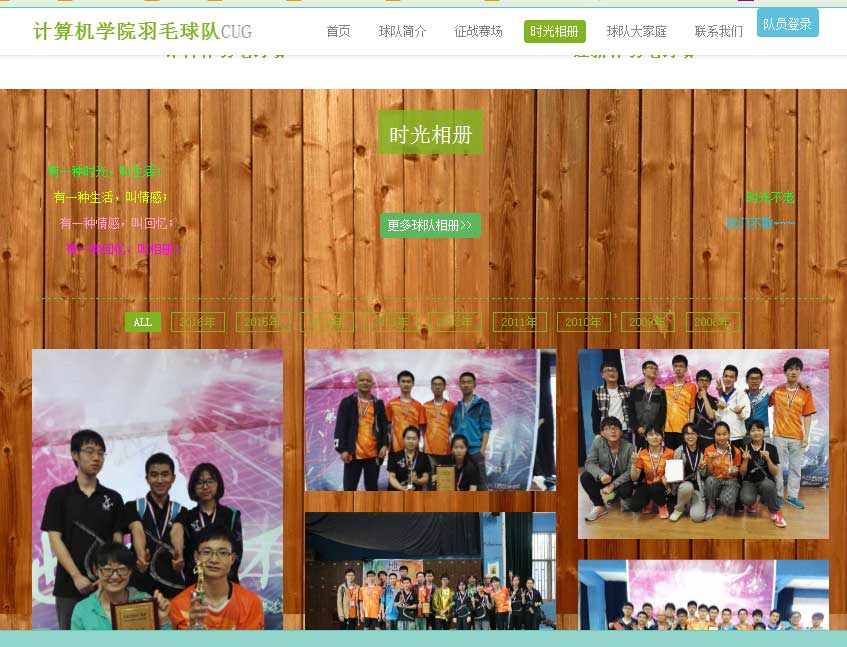
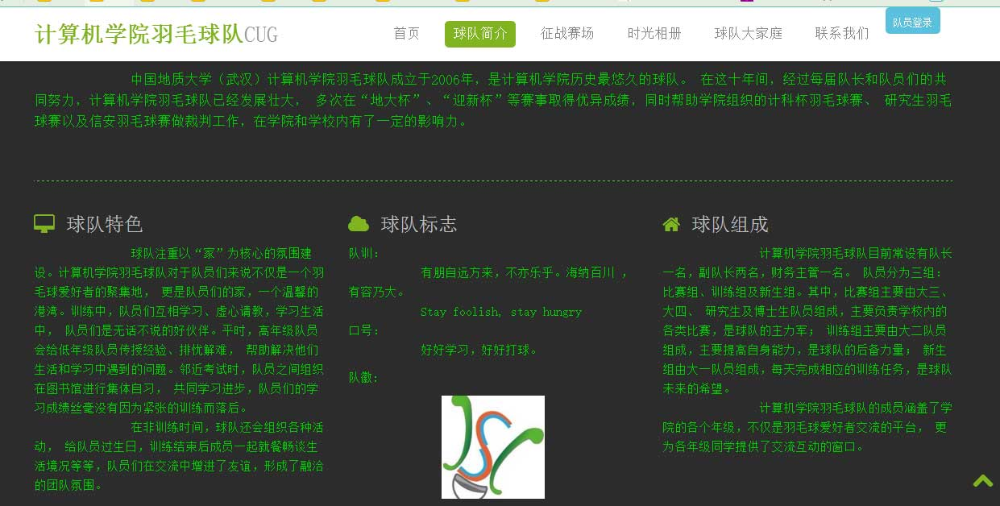

-
- Basic info. 基本信息
- 个人信息: 陈渊 / 男 / 23岁
- 教育经历: 本科 / 中国地质大学(武汉) / 2017年应届生
- 英语水平: CET-4
- 常用ID: chenshuichuan
- Blog: CSDN博客主页
- GitHub: GitHub主页
-
- Experience. 项目与工作经验
项目实践
-
银行排队服务模拟（2014.06）
数据结构课程设计，使用C++、模板链式队列、概率编程、OOP编程技术对银行排队服务进行模拟，以事件驱动为核心思想。
-
招生办签到系统（2015.06-2015.09）
采用C++语言在MFC框架下开发的一个供招生办公室管理助理们的信息及工作记录的桌面软件，采用Access数据库存储数据。两个人合作开发，我负责软件的设计及实现，另一个负责需求分析、数据采集及美工。
-
计算机学院羽毛球队门户网站 源代码 网站地址
采用PHP语言、MySQL数据库及Bootstrap框架开发的羽毛球社团的门户网站，部署在新浪云平台，目前实现了队员登录、信息管理、投票等模块，未来计划实现球队活动内容的动态发布功能。网站地址：http://cugjsjyumaoqiu.applinzi.com/
  -
- Skill. 技能清单
Web前端
-
HTML / CSS
能够编写语义化的 HTML，模块化的 CSS，能熟练运用Bootstrap完成较复杂的布局
-
JavaScript
熟悉原生Javascript，能熟练运用jQuery等类库编码
能运用模块化、面向对象的方式编程
后端
-
环境
熟悉 Linux下Java开发环境、 Linux开发环境搭建部署，Linux下HBase数据库操作，Hadoop编程操作， 2年的Linux 日常使用经验
-
语言
熟练掌握 C++编程开发
了解Java，能进行简单的网络编程和多线程编程
了解PHP编程开发，能编写简单PHP脚本

陈渊的简历
"One Code One World,One Coder One World!"
-
- Contact. 联系方式
- 邮箱: chenshuichuan@hotmail.com
- 微信: 1154693969CHY
- QQ: 1154693969
-
- Application. 应聘岗位
- 游戏开发工程师
-
- Tech. 技能点
HTMLCSSC++JavaJavaScript
我是一个充满活力、对游戏由衷热爱、善于发现问题的前端工程师。
爱好长跑、纯音乐、电影，热爱羽毛球运动，还喜欢一个人静静地泡图书馆里的名著小说。关注计算机前沿技术，对人工智能方向比较感兴趣。
我目前正在寻找游戏开发工程师岗位，希望借此机会为贵司献上我的一点绵薄之力，快招我到碗里来吧！